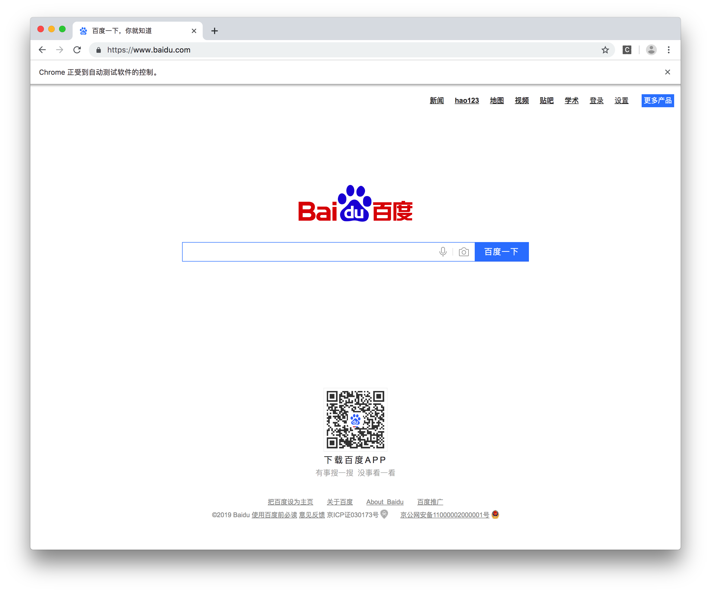

Selenium的基本使用
学习目标
- 掌握 selenium发送请求，加载网页的方法
- 掌握 selenium简单的元素定位的方法
- 掌握 selenium的基础属性和方法
- 掌握 selenium退出的方法
1 加载网页
from selenium import webdriver
# 获取要操作的浏览器驱动对象（直白点说，这个对象可以控制浏览器）
browser = webdriver.Chrome()
# 加载指定的页面
browser.get("http://www.baidu.com")
# 截屏
browser.save_screenshot("百度首页.png")
运行如上代码的效果，会自动打开百度的页面

2 定位和操作
import time
from selenium import webdriver
# 获取要操作的浏览器驱动对象
browser = webdriver.Chrome()
# 加载指定的页面
browser.get("http://www.baidu.com")
# 获取指定的元素
browser.find_element_by_id("kw").send_keys("长城")
# 延时，以便看清楚要进行的操作
time.sleep(2)
# 点击 "百度一下"
browser.find_element_by_id("su").click()
3 查看请求信息
import time
from selenium import webdriver
# 获取要操作的浏览器驱动对象
browser = webdriver.Chrome()
# 加载指定的页面
browser.get("http://www.baidu.com")
# 查看访问的页面的源代码
print(browser.page_source)
# 查看cookie
print(browser.get_cookies())
# 查看经过处理之后，本页面最后显示的url，如果有302的话，那么就是302之后的url
print(browser.current_url)
4 退出
import time
from selenium import webdriver
# 获取要操作的浏览器驱动对象
browser = webdriver.Chrome()
# browser = webdriver.PhantomJS()
# 加载指定的页面
browser.get("http://www.baidu.com")
# 为了演示，浏览器打开后关闭的效果，要先延时一会
time.sleep(3)
# 关闭当前页面（当浏览器只有1个页面时，此操作会让浏览器退出）
browser.close()
# 让浏览器退出(如果用selenium打开了很多的)
browser.quit()
小结
- selenium的导包:
from selenium import webdriver - selenium创建driver对象:
webdriver.PhantomJS() - selenium请求数据:
driver.get("http://www.baidu.com/") - selenium查看数据:
driver.page_source - 关闭无界面浏览器:
driver.quit() - 根据id定位元素:
driver.find_element_by_id("kw") - 操作点击事件:
click() - 给输入框赋值:
send_keys()